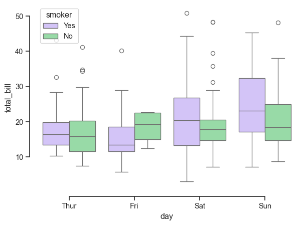
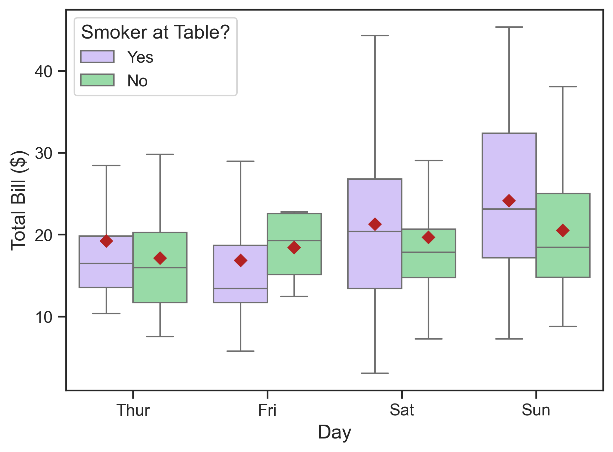

Today we’re going to install (or double check installations for) the computing tools we will use in this course and practice the lab report submission workflow. If you are an experienced programmer, you are free to follow your own workflow and/or use your own toolkit for implementing labs - but there is a lower probability that I can help you troubleshoot any issues you run into.
Setup our GitHub account and create a repository for today’s lab.
Run through the setup steps typical of future labs, run some code, export our notebook, and submit a pdf on Canvas.
Lab Workflow
Installation and Setup
Download VS Code for your machine if you don’t already have it.
Install Mamba for your system if you don’t already have it. We will use Python in individual Mamba environments as opposed to a system-wide distribution.
Please review key concepts for environment management with Mamba.
Install the Jupyter & Python VS Code extensions, along with their extension packs.
Download git for your machine if you don’t already have it.
Create a new Public repository called ‘ENGS 199.20 Lab 1’. Add a README, .gitignore, and License. Learn about these files if you are unfamiliar with them.
Clone your repository to your local machine. I recommend having a directory for this class and to clone the repository inside that directory.
Download this file as a Jupyter notebook (see the upper righthand corner of the page) and add it to your project directory. You can use whatever git workflow you’d like to do version control, but I will provide instructions for using the command line.
Run git remote -v to check that your local repository is tracking the repository on GitHub.
Run git status from this lab directory’s root to see that the notebook is untracked.
Run git add . to track the notebook.
Run git commit -m [message] with your own helpful message.
Use this simple workflow when you make changes to files. If you don’t want to track a file, you can add the specific file’s location (or use wildcards and file prefixes or suffixes) to avoid tracking.
For this lab, we are going to create a small environment that allows us to plot using the seaborn package. conda-lock allows us to create multi-platform instances of the exact package versions others need to reproduce our computational environment. After following these next instructions, we will be ready to run our notebook.
Create a file called env-lock.yml in your lab1 directory. Add the following contents and save:
Run mamba create -f env-lock.yml. Run mamba activate lab1. Set up the kernel for the environment with python -m ipykernel install --user --name lab1 --display-name lab1.
Run Code
Below, I reproduce a plot from the seaborn Gallery. Make sure the lab1 kernel is set up in the notebook and then run the code block.
Code
import seaborn as snssns.set_theme(style="ticks", palette="pastel")# Load the example tips datasettips = sns.load_dataset("tips")# Draw a nested boxplot to show bills by day and timesns.boxplot(x="day", y="total_bill", hue="smoker", palette=["m", "g"], data=tips)sns.despine(offset=10, trim=True)

Attractive and clear figures are very important in decision analysis. Run the cell below, which makes the figure higher resolution and makes the font more legible. Some changes reflect my personal style preferences.
Code
import matplotlib.pyplot as plt# Set up a figure with higher resolutionfig, ax = plt.subplots(dpi=300)# Draw a nested boxplot to show bills by day and timesns.boxplot(x="day", y="total_bill", hue="smoker", showfliers=False, palette=["m", "g"], showmeans=True, meanprops={'marker': 'D','markerfacecolor': 'firebrick','markeredgecolor': 'firebrick'}, data=tips, ax=ax)# Rename legend title and increase font sizesns.move_legend(ax, loc='best', title='Smoker at Table?', alignment='left', fontsize=12, title_fontsize=14)# Make tick labels more legibleax.tick_params(labelsize=12)# Rename axis labelsax.set_ylabel("Total Bill ($)", size=14)ax.set_xlabel("Day", size=14)plt.show()

The distribution of restaurant bills in dollars reported by a waiter over a period of several months, shown in boxplots. The grouping examines how total bill size is distributed across day of the week (x-axis) and whether the party included a smoker (hue). Red diamonds denote the mean restaurant bill in each group.
Following the link in the seaborn example, we can learn more about the tips data here.
To complete this lab report, add a code cell where you create a new figure that explores the relationship between variables in this dataset. It does not have to use the variables we used so far, nor do you have to use a boxplot. Make sure your tick and axis labels are at least size 12 and that the figure resolution is at least 300 dots per inch. Make sure your figure includes a caption, which must state the association considered in the exploratory visualization. In the cell after your plot, add a markdown cell where you:
Write out a caption;
Describe the plotted result;
Suggest further analysis that could help uncover the relationship between these and/or other variables.
See a text example below for the revised figure from the seaborn example (note the caption underneath the revised figure on the website).
Analysis: On average, the waiter’s bills were similar regardless of day of the week or whether a smoker was present in the party. On Saturdays and Sundays, bills tended to be larger and more variable when smokers are in a party.
Future work: Lacking information on the relative frequency of bills across days of the week and smokers present in a party, it is difficult to draw strong conclusions about the associations of bill size and the considered variables. To better understand these associations, it would be helpful to show histograms in a second panel under the present plot. In addition, it’s not clear why presence of smokers in a dining party would have any association with the bill size. Other variables in the dataset, such as time of day and size of the party are likely more relevant to consider.
Submit Code and Report
Make sure your GitHub repository is up to date.
Export your .ipynb as a .pdf and submit on Canvas. In your submission, share a link to your repository. Please replace “ENGS 199.20” in the top cell with your name and change the filename to include your name.
Printing Code to PDF
Because we included nbconvert in our computational environment, we should be able to export the .ipynb to .pdf using VS Code and get a nicely formatted file.